1.6. 最邻近法¶
最邻近法 主要是一种非监督或基于临近的监督学习方法. 非监督最邻近法是许多其他学习算法的基础，特别是流行学习方法及谱聚类方法. 基于临近的监督分类主要在一下两方面具有优势: 具有离散标签数据的`分类`和 连续标签数据的`回归`..
The principle behind nearest neighbor methods is to find a predefined number of training samples closest in distance to the new point, and predict the label from these. The number of samples can be a user-defined constant (k-nearest neighbor learning), or vary based on the local density of points (radius-based neighbor learning). The distance can, in general, be any metric measure: standard Euclidean distance is the most common choice. Neighbors-based methods are known as non-generalizing machine learning methods, since they simply “remember” all of its training data (possibly transformed into a fast indexing structure such as a Ball Tree or KD Tree.).
Despite its simplicity, nearest neighbors has been successful in a large number of classification and regression problems, including handwritten digits or satellite image scenes. Being a non-parametric method, it is often successful in classification situations where the decision boundary is very irregular.
The classes in sklearn.neighbors can handle either Numpy arrays or
scipy.sparse matrices as input. For dense matrices, a large number of
possible distance metrics are supported. For sparse matrices, arbitrary
Minkowski metrics are supported for searches.
There are many learning routines which rely on nearest neighbors at their core. One example is kernel density estimation, discussed in the density estimation section.
1.6.1. Unsupervised Nearest Neighbors¶
NearestNeighbors implements unsupervised nearest neighbors learning.
It acts as a uniform interface to three different nearest neighbors
algorithms: BallTree, KDTree, and a
brute-force algorithm based on routines in sklearn.metrics.pairwise.
The choice of neighbors search algorithm is controlled through the keyword
'algorithm', which must be one of
['auto', 'ball_tree', 'kd_tree', 'brute']. When the default value
'auto' is passed, the algorithm attempts to determine the best approach
from the training data. For a discussion of the strengths and weaknesses
of each option, see Nearest Neighbor Algorithms.
Warning
Regarding the Nearest Neighbors algorithms, if two neighbors, neighbor 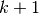 and
, have identical distances but different labels, the results will depend on the ordering of the training data.
1.6.1.1. Finding the Nearest Neighbors¶
For the simple task of finding the nearest neighbors between two sets of
data, the unsupervised algorithms within sklearn.neighbors can be
used:
>>> from sklearn.neighbors import NearestNeighbors
>>> import numpy as np
>>> X = np.array([[-1, -1], [-2, -1], [-3, -2], [1, 1], [2, 1], [3, 2]])
>>> nbrs = NearestNeighbors(n_neighbors=2, algorithm='ball_tree').fit(X)
>>> distances, indices = nbrs.kneighbors(X)
>>> indices
array([[0, 1],
[1, 0],
[2, 1],
[3, 4],
[4, 3],
[5, 4]]...)
>>> distances
array([[ 0. , 1. ],
[ 0. , 1. ],
[ 0. , 1.41421356],
[ 0. , 1. ],
[ 0. , 1. ],
[ 0. , 1.41421356]])
Because the query set matches the training set, the nearest neighbor of each point is the point itself, at a distance of zero.
It is also possible to efficiently produce a sparse graph showing the connections between neighboring points:
>>> nbrs.kneighbors_graph(X).toarray()
array([[ 1., 1., 0., 0., 0., 0.],
[ 1., 1., 0., 0., 0., 0.],
[ 0., 1., 1., 0., 0., 0.],
[ 0., 0., 0., 1., 1., 0.],
[ 0., 0., 0., 1., 1., 0.],
[ 0., 0., 0., 0., 1., 1.]])
Our dataset is structured such that points nearby in index order are nearby
in parameter space, leading to an approximately block-diagonal matrix of
K-nearest neighbors. Such a sparse graph is useful in a variety of
circumstances which make use of spatial relationships between points for
unsupervised learning: in particular, see sklearn.manifold.Isomap,
sklearn.manifold.LocallyLinearEmbedding, and
sklearn.cluster.SpectralClustering.
1.6.1.2. KDTree and BallTree Classes¶
Alternatively, one can use the KDTree or BallTree classes
directly to find nearest neighbors. This is the functionality wrapped by
the NearestNeighbors class used above. The Ball Tree and KD Tree
have the same interface; we’ll show an example of using the KD Tree here:
>>> from sklearn.neighbors import KDTree
>>> import numpy as np
>>> X = np.array([[-1, -1], [-2, -1], [-3, -2], [1, 1], [2, 1], [3, 2]])
>>> kdt = KDTree(X, leaf_size=30, metric='euclidean')
>>> kdt.query(X, k=2, return_distance=False)
array([[0, 1],
[1, 0],
[2, 1],
[3, 4],
[4, 3],
[5, 4]]...)
Refer to the KDTree and BallTree class documentation
for more information on the options available for neighbors searches,
including specification of query strategies, of various distance metrics, etc.
For a list of available metrics, see the documentation of the
DistanceMetric class.
1.6.2. Nearest Neighbors Classification¶
Neighbors-based classification is a type of instance-based learning or non-generalizing learning: it does not attempt to construct a general internal model, but simply stores instances of the training data. Classification is computed from a simple majority vote of the nearest neighbors of each point: a query point is assigned the data class which has the most representatives within the nearest neighbors of the point.
scikit-learn implements two different nearest neighbors classifiers:
KNeighborsClassifier implements learning based on the
nearest neighbors of each query point, where is an integer value
specified by the user. RadiusNeighborsClassifier implements learning
based on the number of neighbors within a fixed radius  of each
training point, where is a floating-point value specified by
the user.
of each
training point, where is a floating-point value specified by
the user.
The -neighbors classification in KNeighborsClassifier
is the more commonly used of the two techniques. The
optimal choice of the value is highly data-dependent: in general
a larger suppresses the effects of noise, but makes the
classification boundaries less distinct.
In cases where the data is not uniformly sampled, radius-based neighbors
classification in RadiusNeighborsClassifier can be a better choice.
The user specifies a fixed radius , such that points in sparser
neighborhoods use fewer nearest neighbors for the classification. For
high-dimensional parameter spaces, this method becomes less effective due
to the so-called “curse of dimensionality”.
The basic nearest neighbors classification uses uniform weights: that is, the
value assigned to a query point is computed from a simple majority vote of
the nearest neighbors. Under some circumstances, it is better to weight the
neighbors such that nearer neighbors contribute more to the fit. This can
be accomplished through the weights keyword. The default value,
weights = 'uniform', assigns uniform weights to each neighbor.
weights = 'distance' assigns weights proportional to the inverse of the
distance from the query point. Alternatively, a user-defined function of the
distance can be supplied which is used to compute the weights.


Examples:
- Nearest Neighbors Classification: an example of classification using nearest neighbors.
1.6.3. Nearest Neighbors Regression¶
Neighbors-based regression can be used in cases where the data labels are continuous rather than discrete variables. The label assigned to a query point is computed based the mean of the labels of its nearest neighbors.
scikit-learn implements two different neighbors regressors:
KNeighborsRegressor implements learning based on the
nearest neighbors of each query point, where is an integer
value specified by the user. RadiusNeighborsRegressor implements
learning based on the neighbors within a fixed radius of the
query point, where is a floating-point value specified by the
user.
The basic nearest neighbors regression uses uniform weights: that is,
each point in the local neighborhood contributes uniformly to the
classification of a query point. Under some circumstances, it can be
advantageous to weight points such that nearby points contribute more
to the regression than faraway points. This can be accomplished through
the weights keyword. The default value, weights = 'uniform',
assigns equal weights to all points. weights = 'distance' assigns
weights proportional to the inverse of the distance from the query point.
Alternatively, a user-defined function of the distance can be supplied,
which will be used to compute the weights.

The use of multi-output nearest neighbors for regression is demonstrated in Face completion with a multi-output estimators. In this example, the inputs X are the pixels of the upper half of faces and the outputs Y are the pixels of the lower half of those faces.
Examples:
- Nearest Neighbors regression: an example of regression using nearest neighbors.
- Face completion with a multi-output estimators: an example of multi-output regression using nearest neighbors.
1.6.4. Nearest Neighbor Algorithms¶
1.6.4.1. Brute Force¶
Fast computation of nearest neighbors is an active area of research in
machine learning. The most naive neighbor search implementation involves
the brute-force computation of distances between all pairs of points in the
dataset: for  samples in
samples in  dimensions, this approach scales
as 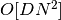. Efficient brute-force neighbors searches can be very
competitive for small data samples.
However, as the number of samples grows, the brute-force
approach quickly becomes infeasible. In the classes within
dimensions, this approach scales
as 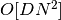. Efficient brute-force neighbors searches can be very
competitive for small data samples.
However, as the number of samples grows, the brute-force
approach quickly becomes infeasible. In the classes within
sklearn.neighbors, brute-force neighbors searches are specified
using the keyword algorithm = 'brute', and are computed using the
routines available in sklearn.metrics.pairwise.
1.6.4.2. K-D Tree¶
To address the computational inefficiencies of the brute-force approach, a
variety of tree-based data structures have been invented. In general, these
structures attempt to reduce the required number of distance calculations
by efficiently encoding aggregate distance information for the sample.
The basic idea is that if point  is very distant from point
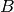, and point is very close to point
is very distant from point
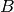, and point is very close to point  ,
then we know that points and
are very distant, without having to explicitly calculate their distance.
In this way, the computational cost of a nearest neighbors search can be
reduced to 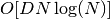 or better. This is a significant
improvement over brute-force for large .
,
then we know that points and
are very distant, without having to explicitly calculate their distance.
In this way, the computational cost of a nearest neighbors search can be
reduced to 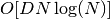 or better. This is a significant
improvement over brute-force for large .
An early approach to taking advantage of this aggregate information was
the KD tree data structure (short for K-dimensional tree), which
generalizes two-dimensional Quad-trees and 3-dimensional Oct-trees
to an arbitrary number of dimensions. The KD tree is a binary tree
structure which recursively partitions the parameter space along the data
axes, dividing it into nested orthotopic regions into which data points
are filed. The construction of a KD tree is very fast: because partitioning
is performed only along the data axes, no -dimensional distances
need to be computed. Once constructed, the nearest neighbor of a query
point can be determined with only 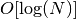 distance computations.
Though the KD tree approach is very fast for low-dimensional ( )
neighbors searches, it becomes inefficient as grows very large:
this is one manifestation of the so-called “curse of dimensionality”.
In scikit-learn, KD tree neighbors searches are specified using the
keyword
)
neighbors searches, it becomes inefficient as grows very large:
this is one manifestation of the so-called “curse of dimensionality”.
In scikit-learn, KD tree neighbors searches are specified using the
keyword algorithm = 'kd_tree', and are computed using the class
KDTree.
References:
- “Multidimensional binary search trees used for associative searching”, Bentley, J.L., Communications of the ACM (1975)
1.6.4.3. Ball Tree¶
To address the inefficiencies of KD Trees in higher dimensions, the ball tree data structure was developed. Where KD trees partition data along Cartesian axes, ball trees partition data in a series of nesting hyper-spheres. This makes tree construction more costly than that of the KD tree, but results in a data structure which can be very efficient on highly-structured data, even in very high dimensions.
A ball tree recursively divides the data into
nodes defined by a centroid and radius , such that each
point in the node lies within the hyper-sphere defined by and
. The number of candidate points for a neighbor search
is reduced through use of the triangle inequality:
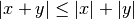
With this setup, a single distance calculation between a test point and
the centroid is sufficient to determine a lower and upper bound on the
distance to all points within the node.
Because of the spherical geometry of the ball tree nodes, it can out-perform
a KD-tree in high dimensions, though the actual performance is highly
dependent on the structure of the training data.
In scikit-learn, ball-tree-based
neighbors searches are specified using the keyword algorithm = 'ball_tree',
and are computed using the class sklearn.neighbors.BallTree.
Alternatively, the user can work with the BallTree class directly.
References:
- “Five balltree construction algorithms”, Omohundro, S.M., International Computer Science Institute Technical Report (1989)
1.6.4.4. Choice of Nearest Neighbors Algorithm¶
The optimal algorithm for a given dataset is a complicated choice, and depends on a number of factors:
number of samples
(i.e. n_samples) and dimensionality (i.e. n_features).- Brute force query time grows as 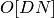
- Ball tree query time grows as approximately
![O[D \log(N)]](../_images/math/974c5f1d8585eb528dfe40e806e691b93d32fcce.png)
- KD tree query time changes with in a way that is difficult
to precisely characterise. For small (less than 20 or so)
the cost is approximately 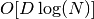, and the KD tree
query can be very efficient.
For larger , the cost increases to nearly
![O[DN]](../_images/math/b1b02908acc20145bfec9cde71e0ee5ab4881b69.png) , and
the overhead due to the tree
structure can lead to queries which are slower than brute force.
, and
the overhead due to the tree
structure can lead to queries which are slower than brute force.
For small data sets (
less than 30 or so), 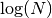 is
comparable to , and brute force algorithms can be more efficient
than a tree-based approach. Both KDTreeandBallTreeaddress this through providing a leaf size parameter: this controls the number of samples at which a query switches to brute-force. This allows both algorithms to approach the efficiency of a brute-force computation for small.data structure: intrinsic dimensionality of the data and/or sparsity of the data. Intrinsic dimensionality refers to the dimension 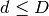 of a manifold on which the data lies, which can be linearly or non-linearly embedded in the parameter space. Sparsity refers to the degree to which the data fills the parameter space (this is to be distinguished from the concept as used in “sparse” matrices. The data matrix may have no zero entries, but the structure can still be “sparse” in this sense).
- Brute force query time is unchanged by data structure.
- Ball tree and KD tree query times can be greatly influenced by data structure. In general, sparser data with a smaller intrinsic dimensionality leads to faster query times. Because the KD tree internal representation is aligned with the parameter axes, it will not generally show as much improvement as ball tree for arbitrarily structured data.
Datasets used in machine learning tend to be very structured, and are very well-suited for tree-based queries.
number of neighbors
requested for a query point.- Brute force query time is largely unaffected by the value of
- Ball tree and KD tree query time will become slower as
increases. This is due to two effects: first, a larger leads
to the necessity to search a larger portion of the parameter space.
Second, using 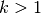 requires internal queueing of results
as the tree is traversed.
As
becomes large compared to , the ability to prune
branches in a tree-based query is reduced. In this situation, Brute force
queries can be more efficient.- Brute force query time is largely unaffected by the value of
number of query points. Both the ball tree and the KD Tree require a construction phase. The cost of this construction becomes negligible when amortized over many queries. If only a small number of queries will be performed, however, the construction can make up a significant fraction of the total cost. If very few query points will be required, brute force is better than a tree-based method.
Currently, algorithm = 'auto' selects 'kd_tree' if 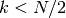
and the 'effective_metric_' is in the 'VALID_METRICS' list of
'kd_tree'. It selects 'ball_tree' if and the
'effective_metric_' is not in the 'VALID_METRICS' list of
'kd_tree'. It selects 'brute' if 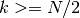. This choice is based on the assumption that the number of query points is at least the
same order as the number of training points, and that leaf_size is
close to its default value of 30.
1.6.4.5. Effect of leaf_size¶
As noted above, for small sample sizes a brute force search can be more
efficient than a tree-based query. This fact is accounted for in the ball
tree and KD tree by internally switching to brute force searches within
leaf nodes. The level of this switch can be specified with the parameter
leaf_size. This parameter choice has many effects:
- construction time
- A larger
leaf_sizeleads to a faster tree construction time, because fewer nodes need to be created - query time
- Both a large or small
leaf_sizecan lead to suboptimal query cost. Forleaf_sizeapproaching 1, the overhead involved in traversing nodes can significantly slow query times. Forleaf_sizeapproaching the size of the training set, queries become essentially brute force. A good compromise between these isleaf_size = 30, the default value of the parameter. - memory
- As
leaf_sizeincreases, the memory required to store a tree structure decreases. This is especially important in the case of ball tree, which stores a-dimensional centroid for each node. The required
storage space for BallTreeis approximately1 / leaf_sizetimes the size of the training set.
leaf_size is not referenced for brute force queries.
1.6.5. Nearest Centroid Classifier¶
The NearestCentroid classifier is a simple algorithm that represents
each class by the centroid of its members. In effect, this makes it
similar to the label updating phase of the sklearn.KMeans algorithm.
It also has no parameters to choose, making it a good baseline classifier. It
does, however, suffer on non-convex classes, as well as when classes have
drastically different variances, as equal variance in all dimensions is
assumed. See Linear Discriminant Analysis (sklearn.discriminant_analysis.LinearDiscriminantAnalysis)
and Quadratic Discriminant Analysis (sklearn.discriminant_analysis.QuadraticDiscriminantAnalysis)
for more complex methods that do not make this assumption. Usage of the default
NearestCentroid is simple:
>>> from sklearn.neighbors.nearest_centroid import NearestCentroid
>>> import numpy as np
>>> X = np.array([[-1, -1], [-2, -1], [-3, -2], [1, 1], [2, 1], [3, 2]])
>>> y = np.array([1, 1, 1, 2, 2, 2])
>>> clf = NearestCentroid()
>>> clf.fit(X, y)
NearestCentroid(metric='euclidean', shrink_threshold=None)
>>> print(clf.predict([[-0.8, -1]]))
[1]
1.6.5.1. Nearest Shrunken Centroid¶
The NearestCentroid classifier has a shrink_threshold parameter,
which implements the nearest shrunken centroid classifier. In effect, the value
of each feature for each centroid is divided by the within-class variance of
that feature. The feature values are then reduced by shrink_threshold. Most
notably, if a particular feature value crosses zero, it is set
to zero. In effect, this removes the feature from affecting the classification.
This is useful, for example, for removing noisy features.
In the example below, using a small shrink threshold increases the accuracy of the model from 0.81 to 0.82.


Examples:
- Nearest Centroid Classification: an example of classification using nearest centroid with different shrink thresholds.
1.6.6. Approximate Nearest Neighbors¶
There are many efficient exact nearest neighbor search algorithms for low
dimensions  (approximately 50). However these algorithms perform poorly
with respect to space and query time when increases. These algorithms
are not any better than comparing query point to each point from the database in
a high dimension (see Brute Force). This is a well-known consequence of
the phenomenon called “The Curse of Dimensionality”.
(approximately 50). However these algorithms perform poorly
with respect to space and query time when increases. These algorithms
are not any better than comparing query point to each point from the database in
a high dimension (see Brute Force). This is a well-known consequence of
the phenomenon called “The Curse of Dimensionality”.
There are certain applications where we do not need the exact nearest neighbors
but having a “good guess” would suffice. When answers do not have to be exact,
the LSHForest class implements an approximate nearest neighbor search.
Approximate nearest neighbor search methods have been designed to try to speedup
query time with high dimensional data. These techniques are useful when the aim
is to characterize the neighborhood rather than identifying the exact neighbors
themselves (eg: k-nearest neighbors classification and regression). Some of the
most popular approximate nearest neighbor search techniques are locality
sensitive hashing, best bin fit and balanced box-decomposition tree based
search.
1.6.6.1. Locality Sensitive Hashing Forest¶
The vanilla implementation of locality sensitive hashing has a hyper-parameter
that is hard to tune in practice, therefore scikit-learn implements a variant
called LSHForest that has more reasonable hyperparameters.
Both methods use internally random hyperplanes to index the samples into
buckets and actual cosine similarities are only computed for samples that
collide with the query hence achieving sublinear scaling.
(see Mathematical description of Locality Sensitive
Hashing).
LSHForest has two main hyper-parameters: n_estimators and
n_candidates. The accuracy of queries can be controlled using these
parameters as demonstrated in the following plots:
As a rule of thumb, a user can set n_estimators to a large enough value
(e.g. between 10 and 50) and then adjust n_candidates to trade off accuracy
for query time.
For small data sets, the brute force method for exact nearest neighbor search can be faster than LSH Forest. However LSH Forest has a sub-linear query time scalability with the index size. The exact break even point where LSH Forest queries become faster than brute force depends on the dimensionality, structure of the dataset, required level of precision, characteristics of the runtime environment such as availability of BLAS optimizations, number of CPU cores and size of the CPU caches. Following graphs depict scalability of LSHForest queries with index size.

For fixed LSHForest parameters, the accuracy of queries tends to slowly
decrease with larger datasets. The error bars on the previous plots represent
standard deviation across different queries.
Examples:
- Hyper-parameters of Approximate Nearest Neighbors: an example of the behavior of hyperparameters of approximate nearest neighbor search using LSH Forest.
- Scalability of Approximate Nearest Neighbors: an example of scalability of approximate nearest neighbor search using LSH Forest.
1.6.6.2. Mathematical description of Locality Sensitive Hashing¶
Locality sensitive hashing (LSH) techniques have been used in many areas where nearest neighbor search is performed in high dimensions. The main concept behind LSH is to hash each data point in the database using multiple (often simple) hash functions to form a digest (also called a hash). At this point the probability of collision - where two objects have similar digests - is much higher for the points which are close to each other than that of the distant points. We describe the requirements for a hash function family to be locality sensitive as follows.
A family 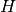 of functions from a domain 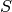 to a range  is called 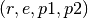-sensitive, with 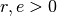,
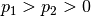, if for any 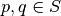, the following conditions
hold ( is the distance function):
is called 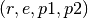-sensitive, with 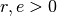,
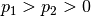, if for any 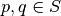, the following conditions
hold ( is the distance function):
- If 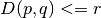 then 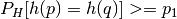,
- If 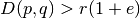 then 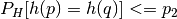.
As defined, nearby points within a distance of to each other are
likely to collide with probability  . In contrast, distant points
which are located with the distance more than 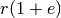 have a small
probability of
. In contrast, distant points
which are located with the distance more than 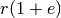 have a small
probability of  of collision. Suppose there is a family of LSH
function . An LSH index is built as follows:
of collision. Suppose there is a family of LSH
function . An LSH index is built as follows:
- Choose functions 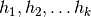 uniformly at
random (with replacement) from . For any 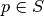, place
 in the bucket with label
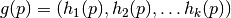. Observe that if
each 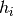 outputs one “digit”, each bucket has a k-digit label.
in the bucket with label
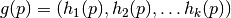. Observe that if
each 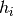 outputs one “digit”, each bucket has a k-digit label. - Independently perform step 1
 times to construct
separate estimators, with hash functions 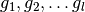.
times to construct
separate estimators, with hash functions 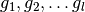.
The reason to concatenate hash functions in the step 1 is to decrease the
probability of the collision of distant points as much as possible. The
probability drops from to 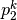 which is negligibly
small for large . The choice of is strongly dependent on
the data set size and structure and is therefore hard to tune in practice.
There is a side effect of having a large ; it has the potential of
decreasing the chance of nearby points getting collided. To address this
issue, multiple estimators are constructed in step 2.
The requirement to tune for a given dataset makes classical LSH
cumbersome to use in practice. The LSH Forest variant has benn designed to
alleviate this requirement by automatically adjusting the number of digits
used to hash the samples.
LSH Forest is formulated with prefix trees with each leaf of
a tree corresponding to an actual data point in the database. There are
such trees which compose the forest and they are constructed using
independently drawn random sequence of hash functions from . In this
implementation, “Random Projections” is being used as the LSH technique which
is an approximation for the cosine distance. The length of the sequence of
hash functions is kept fixed at 32. Moreover, a prefix tree is implemented
using sorted arrays and binary search.
There are two phases of tree traversals used in order to answer a query to find
the  nearest neighbors of a point 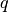. First, a top-down
traversal is performed using a binary search to identify the leaf having the
longest prefix match (maximum depth) with ‘s label after subjecting
to the same hash functions. 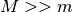 points (total candidates)
are extracted from the forest, moving up from the previously found maximum
depth towards the root synchronously across all trees in the bottom-up
traversal. M is set to 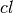 where
nearest neighbors of a point 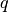. First, a top-down
traversal is performed using a binary search to identify the leaf having the
longest prefix match (maximum depth) with ‘s label after subjecting
to the same hash functions. 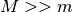 points (total candidates)
are extracted from the forest, moving up from the previously found maximum
depth towards the root synchronously across all trees in the bottom-up
traversal. M is set to 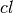 where  , the number of candidates
extracted from each tree, is a constant. Finally, the similarity of each of
these
, the number of candidates
extracted from each tree, is a constant. Finally, the similarity of each of
these  points against point is calculated and the top
points are returned as the nearest neighbors of . Since
most of the time in these queries is spent calculating the distances to
candidates, the speedup compared to brute force search is approximately
points against point is calculated and the top
points are returned as the nearest neighbors of . Since
most of the time in these queries is spent calculating the distances to
candidates, the speedup compared to brute force search is approximately
 , where is the number of points in database.
, where is the number of points in database.
References:
- “Near-Optimal Hashing Algorithms for Approximate Nearest Neighbor in High Dimensions”, Alexandr, A., Indyk, P., Foundations of Computer Science, 2006. FOCS ‘06. 47th Annual IEEE Symposium
- “LSH Forest: Self-Tuning Indexes for Similarity Search”, Bawa, M., Condie, T., Ganesan, P., WWW ‘05 Proceedings of the 14th international conference on World Wide Web Pages 651-660